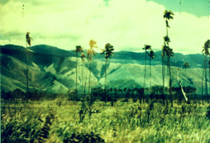

|
|
第７８ 或る戦友からの便り
昭和６０年９月１３日（１９８５年）。横浜在住の須貝謹二さんから次の文面のハガキを頂きました。
記
前略・・・・森正樹氏が厚生省主催、東部ニユーギニア遺骨収拾派遣団の軍通代表として、ようやく彼の
地に行くことに決定した。今回で、東部ニユーギニアの遺骨収拾は最後となる。昭和六十年九月九日森正
樹氏上京し、偕行社での打ち合わせ会に出席した。昭和六十年十月七日、日本を出発し十月二十八日に帰
国の計画で、ニユーギニアのカラワップ、ベンゼン、ニミンガイ、ベリンガ、イガ地域の軍通陣地内の遺
骨を収拾すると言う。これらについて、参考事項がありましたら、教えて上げて下さい。
・・・・中略・・・・四十年前の苛烈な戦場の思い出に釣り込まれます。どうか呉呉もご自愛下さい。
草々

|